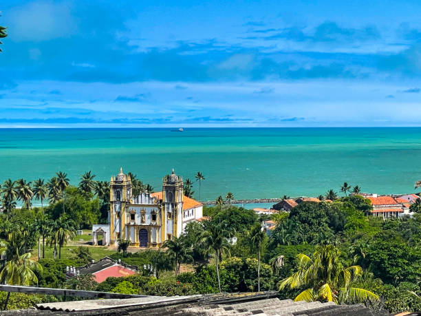
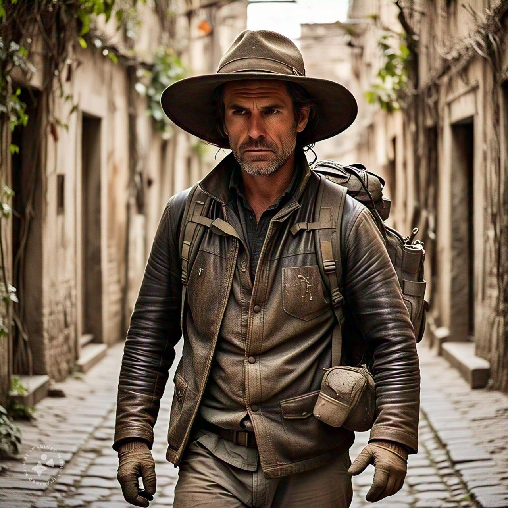
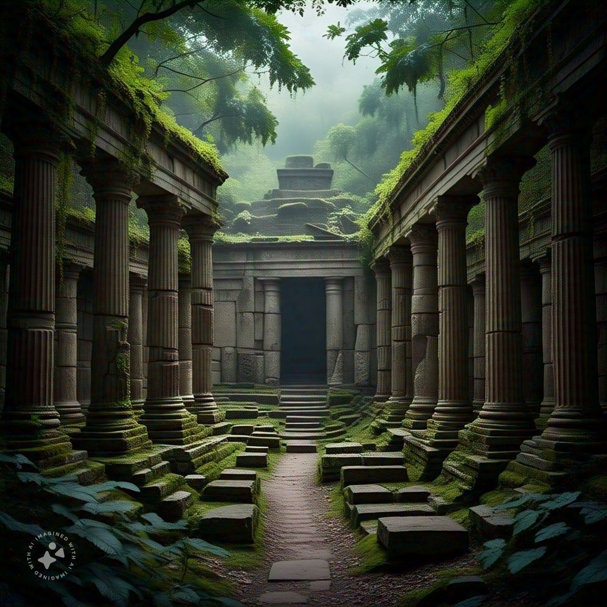

Você é um arqueólogo destemido em busca de um tesouro lendário. A sua jornada começa no Brasil, onde você
deve decidir seu primeiro destino. Onde você irá primeiro?
Você decidiu explorar o Rio de Janeiro.

Você escolheu explorar Pernambuco.
Você encontrou uma pista no topo do Pico da Tijuca. A pista sugere que o próximo destino é a selva
amazônica, onde mais segredos aguardam.

Você desistiu e voltou para casa. Fim da jornada.
Você descobriu algo nas igrejas antigas. As pistas das igrejas apontam para a selva amazônica como o
próximo local a ser explorado.
Você decidiu explorar as praias de Pernambuco.
Você está na Amazônia, enfrentando os desafios da selva.
Você voltou para explorar as igrejas.
Você escolheu seguir o rio à esquerda.
Você seguiu o rio à direita.

Você encontrou a cidade perdida. Você explora as ruínas antigas e finalmente encontra o tesouro que tanto
procurava. Parabéns!